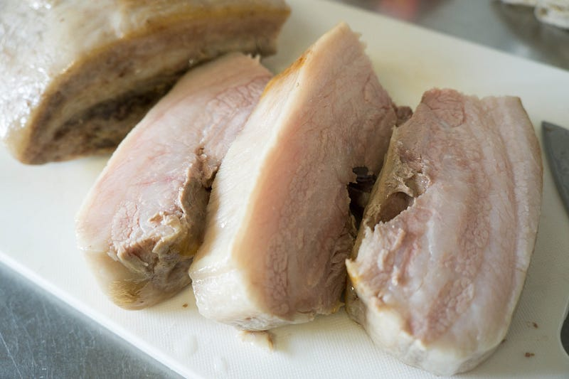
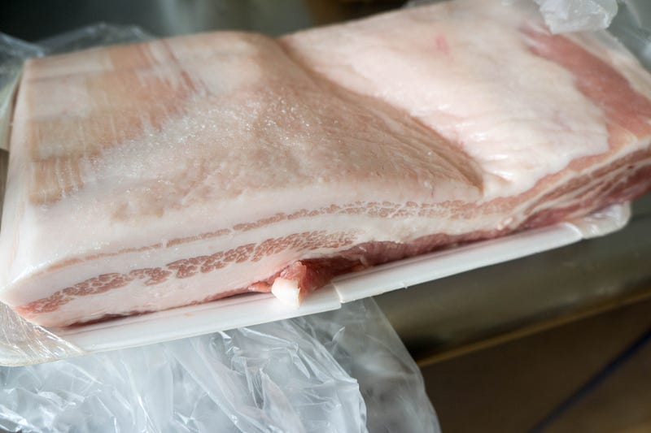
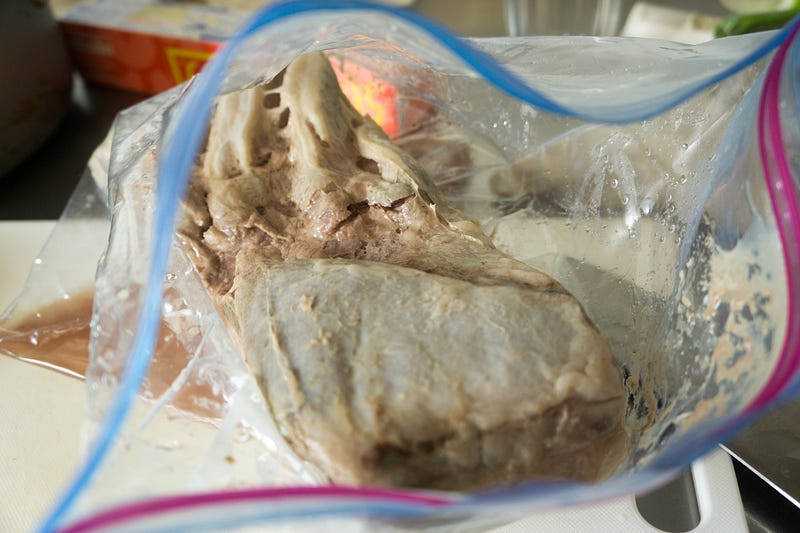
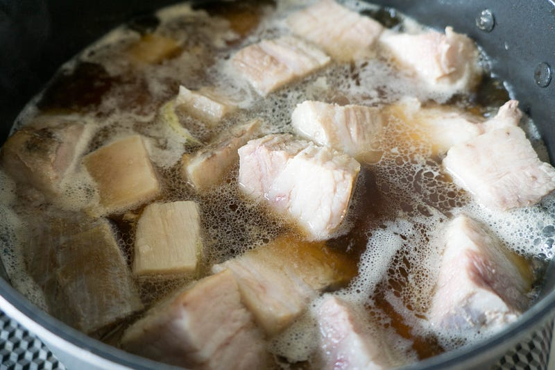
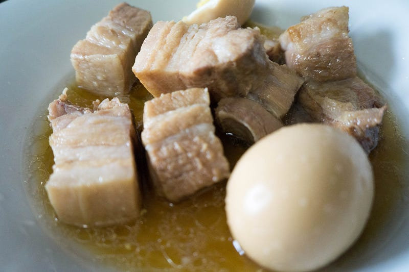

あわてつつも豚の角煮っぽいものをanovaで作る
あわてつつも豚の角煮っぽいものをanovaで作る
暑いので長時間火の前にいたくない。しかし角煮は食いたい。ちょっと不安だったけど、そこでanovaで豚バラ肉を調理してみた。

前回はこちら
このエントリを踏まえた再挑戦はこちら
繊維質が強い肉はanovaよりも圧力鍋向きなのだが、うちには圧力鍋がない。そこでanovaので出番です。それなりに長時間やれば大丈夫なはずだ。
※ WiFi タイプになります。900W スマホと連動してお鍋の水温をコントロール。どこからでも調理 ポンプ速度：毎分7〜8リットル、360度回転のポンプ アプリで操作可能 設定温度に達したらスマホにお知らせ アプリはAppストアUSな…amzn.to
今日作るのは諸事情によりあっさり目、甘め、トンポーローとかではなく和要素が強い角煮です。

ところで今回はそれほど量を作らなくてもいいかなー、と近所の普通のスーパーに行ったら、豚バラ肉400gが100gあたり210円とか書いてあって、愕然として時間もないのにその足でハナマサまで急いで行って100gあたり99円の肉を1kg買ってきた。
各店舗の肉とかのだいたいの単価を知っているとこういうときに「まぁいいか」と言えなくて大変よくない。
豚バラ肉のanovaレシピを探すとだいたい8時間くらい加熱、とある。しかし我が家の夕飯の時間まであと7時間だ。味付けの時間も考えるとどう考えても6時間が使える最大の時間。しょうがない、63℃6時間でいくことにする。今回は生の豚肉が食べたいわけではなく、効率良くゼラチン質を分解したいだけなので、安全優先の63℃です。
低温調理している間にゆで卵を人数分茹でておく。

はい、恒例の「低温調理した、おいしくなさそうな肉」
解体すると断面は以下のように大変おいしそうです。
時間がないので、灰汁を取りつつ、めんつゆ、醤油、砂糖、でゆで卵と一緒に煮込んでいきます。

今回は味をちゃんとしみこませている時間がないので、甘さを強めに。良きところで葱を入れてもうひと煮込み。ある程度煮たら一旦休ませたほうが味が染みるとおもうけど、科学的にはどうなんだろ。
ショウガもいれるけど、煮ると結構苦みがでるので、食べる前の最後の加熱でいいんじゃないのかな、というのが僕の持論。実際はどうかしらん。

はい、あわてて作ったのでろくに脂を処理できなかった角煮のできあがりです。味はうまかった。ゴロゴロした肉を食べられて幸せ。煮卵も良い味だしてる。
脂に関しては残った分を冷蔵庫に入れて、かたまったところを一網打尽してやりました。当然このほうが食べ口がすっきりするので、時間があったらそうしたほうがいいです。
さて、低温調理の結果ですが、僕の判断としては「惜しい！」。
やはりもう数時間やればよかった。ちゃんと食べられるくらい柔らかくなっていたけど、筋肉繊維の太いところがあともうちょっとで完全にほぐれそうだった… ここまで行ってたら食感が結構違ってた気がする。脂身は充分プルプルになってておいしかった。
味付けは正直これくらいの時間で 充分。もっとトンポーローっぽい味付けが良い場合は煮た方がいいかもね。
今回の低温調理方式は、なんといっても豚肉の塊の形がハッキリ、きれいに残るのがよい。崩れてないから、慌てずにちゃんと写真を残そうと思っていたらもっと美しい写真を撮れたとおもう。